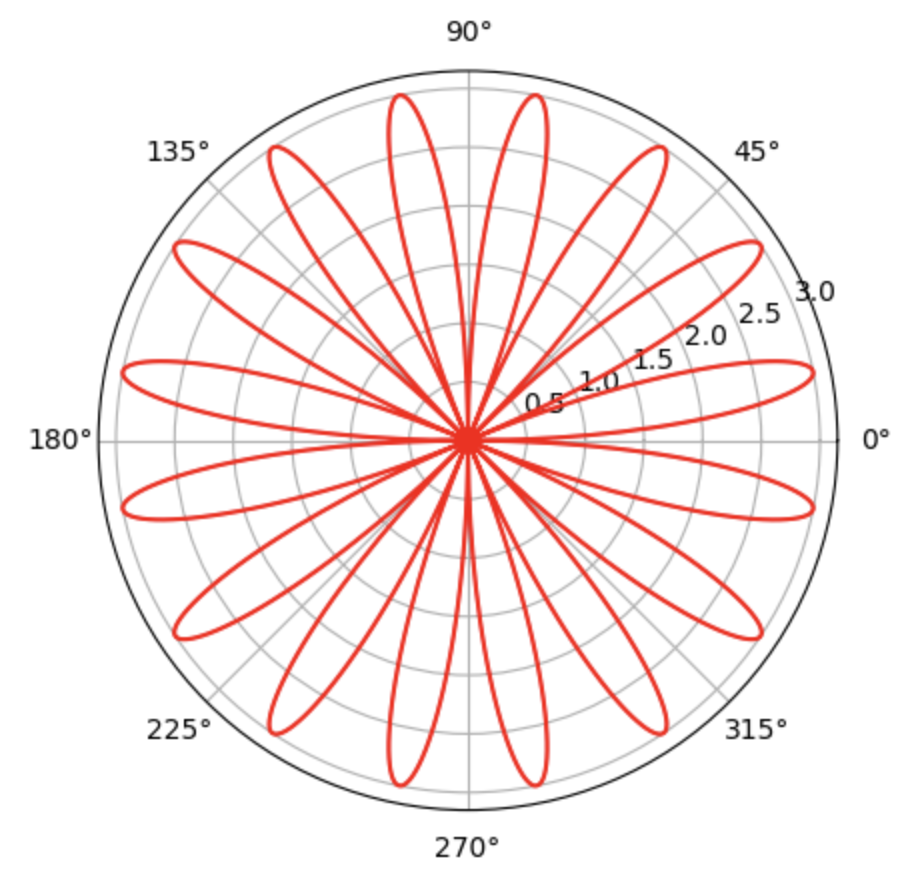

问自己的问题
Posted on Tue 14 May 2024 in Journal
| Abstract | Journal on 2024-05-14 |
|---|---|
| Authors | Walter Fan |
| Category | learning note |
| Status | v1.0 |
| Updated | 2024-05-14 |
| License | CC-BY-NC-ND 4.0 |
2024-05-14
最近心头烦躁, 总是静不下心来, 也没有什么心情记录和分享. 自己的博客和播客都停更了, 想做的事情太多, 想看的书也太多, 然而此身拙笨, 总也搞不清主次, 一会儿就累了, 一会儿就烦了,
问自己下面几个问题
- Status: 我目前的状况
- What: 我的近期和远期目标是什么
- Why: 我为什么要有这些目标
- How: 我要怎么做才能达到目标
王阳明说: "未有知而不行者, 知而不行只是未知" 王阳明又说,
人人自有定盘针, 万化根源问在心. 却笑从前颠倒见, 枝枝叶叶外头寻.
- 理智与情感时常会有冲突, 理智告诉我要认清现实, 谨言慎行,
- 情感告诉我要跟随内心, 做回自己, 追寻心中真正热爱的东西.
那么问题又来了, 我心中真正热爱的东西是什么?
- 美食, 美女, 美物, 美景? 这些都不是, 它们只是享乐
- 立德, 立功, 立言? 这些都不是, 它们只是修行
- 家人, 亲戚, 朋友? 这些都不是, 他们需要的是关爱
- 篮球, 书籍, 音乐, 电影? 这些都不是, 它们只是爱好
唯有创造, 这些才是一生中最热爱的, 才是真正打动我内心的, 为之自豪的东西.
那么我能创造什么, 可以创造什么? 或许是我的孩子, 我写的作品 -- 我写的软件, 我写的文章
tips
- 感受数学之美, 短短几行代码, 在一个极坐标上分配若干个 0 ~ 2pi 之间的角度
import matplotlib.pyplot as plt
import numpy as np
# generate 1000 points from 0 ~ 2Pi
theta = np.linspace(0, 2*np.pi, 1000)
r = 3* np.sin(8 * theta)
plt.polar(theta+(r<0)*np.pi, np.abs(r), 'r')
plt.show()

idea
通过飞书的 calendar api, 自动创建日历行程
POST https://open.feishu.cn/open-apis/calendar/v4/calendars
{
"summary": "Sprint Review and Retrospective meeting",
"description": "Review the result of this sprint and do retrospective",
"permissions": "public",
"color": -1,
"summary_alias": "scrum meeting"
}
本作品采用知识共享署名-非商业性使用-禁止演绎 4.0 国际许可协议进行许可。